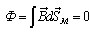

6.1.4. Магнитный поток и потокосцепление
Магнитным потоком (или потоком вектора магнитной индукции через данную поверхность Sм) называют произведение магнитной индукции В на площадь поверхности Sм поля:
Ф = ВSм. |
(6.2) |
|---|
Единица магнитного потока: [Ф] = [B]Ч[S] = TлЧм2 = Вб (вебер).
Согласно закону Гаусса для магнитного поля полный магнитный поток через замкнутую поверхность равен нулю, т. е.
.
В ряде случаев, например, при протекании тока в катушке, магнитный поток несколько раз сцепляется с витками катушки. В первом приближении можно считать, что все линии магнитной индукции сцепляются со всеми витками w катушки. Тогда потокосцепление катушки связывается с потоком Ф простым соотношением: Y = wФ.